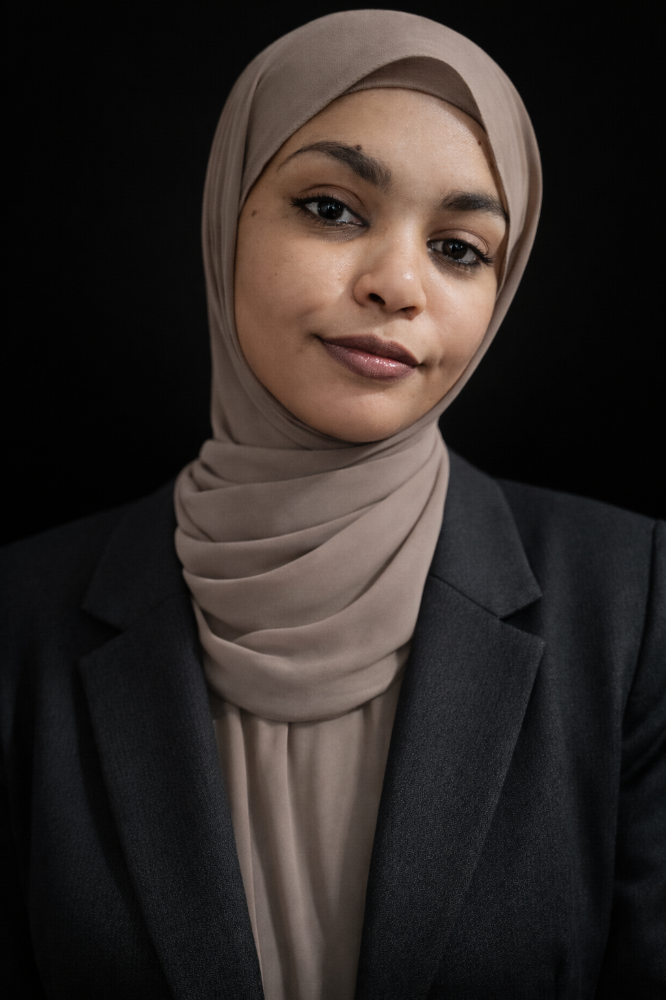

Evidence-led design
Existing research and suitable technologies are being reviewed before a pilot is developed.

Fellowship Programme Fellow
A Sudanese medical graduate combining global health, research and community leadership to improve access for conflict-affected communities.
Back to Fellowship Programme
About the Fellow
Tsabeh grew up in Port Sudan and brings together medical training, public-health research, social entrepreneurship and community leadership.
As an African Graduate Scholar, Tsabeh is pursuing an MSc in Global Health and Development at University College London while preparing for UK medical registration.
Professional & academic background
At Red Sea University, Tsabeh helped establish student-led organisations and activities, including the Red Sea Medical Students' Association, where Tsabeh later served as President.
Experience as a UN Youth Delegate introduced Tsabeh to health policy and diplomacy, while documentary filmmaking developed skills in project management, communication and working with funders.
Research on tuberculosis in Eastern Sudan and needs assessments with displaced women reinforced the importance of evidence, lived experience and solutions designed with communities.
Initiative in development
A solar-powered, AI-assisted tuberculosis screening initiative intended for displaced communities around Port Sudan.
AL-MINA is an initiative in development for solar-powered, AI-assisted tuberculosis screening in displaced communities around Port Sudan, where laboratory infrastructure is severely constrained.
Work to date includes evidence review, comparison of suitable technologies and qualitative stakeholder research. The next phase involves budget development, a monitoring approach and a proposed six-month pilot ahead of hoped-for wider rollout.
Existing research and suitable technologies are being reviewed before a pilot is developed.
Solar power and resource constraints are central to the initiative's developing model.
Budgeting, monitoring and a six-month pilot are future phases; wider rollout remains an ambition.
Support the Fellowship
Support for the Fellowship can help Tsabeh advance postgraduate and professional development while continuing the careful research and planning behind AL-MINA.